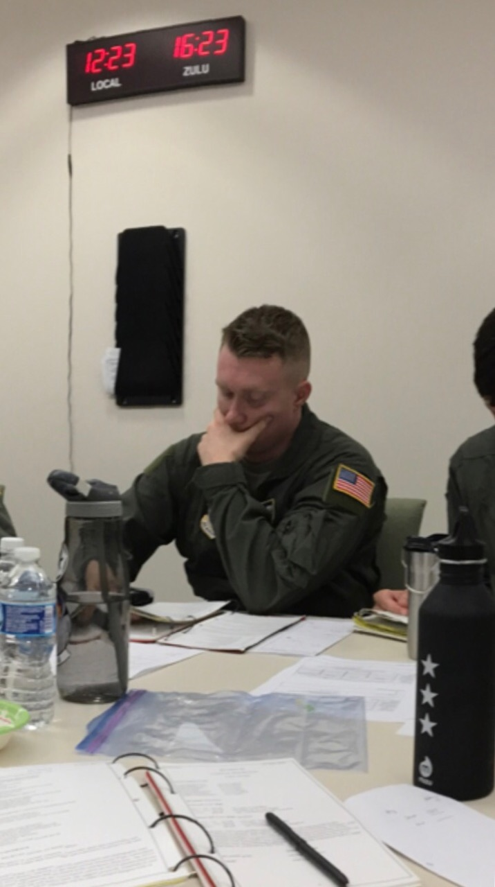

The story of the creators
Two men.
Two lives.
Two upbringings.
Two similar ideas.
One shared passion.
A passion for helping others, through emergency healthcare
Crabby Chris
Chris was ten when he realized his calling to do work as an Army Combat medic. He was 18 when he joined the Army and 20 when shipped off to his first tour of duty in Iraq. He traipsed the northern border with a small team for one month and spent the rest of his tour covering northern Iraq with Charlie Troop, 6th Squadron 9th Cavalry regiment. He earned the titles “Doc” and “Scedic” (meaning Scout Medic) by his platoon of Cavalry Scouts. He served his second tour at a Combat Support Hospital just outside of Al Kut, Iraq with the same unit. Back home and in Korea he worked at various Troop Medical Clinics, Urgent Care Clinics, Emergency Rooms, and even the Labor & Delivery Ward. He saw a need technical innovation in the field of first response and partnered with Zachariah Lowe to create R.A.T.E., a first of its kind device application that efficiently coordinates care and rapidly assists first responders in assessing and treating emergent medical conditions.
Zig-Zach

As an accomplished and decorated Flight Medic, Zach has been able to Now this is a story all about how
My life got flipped-turned upside down
And I'd like to take a minute
Just sit right there
I'll tell you how I became the prince of a town called Bel-Air
In west Philadelphia born and raised
On the playground was where I spent most of my days
Chillin' out maxin' relaxin' all cool
And all shooting some b-ball outside of the school
When a couple of guys who were up to no good
Started making trouble in my neighborhood
I got in one little fight and my mom got scared
She said, "You're movin' with your auntie and uncle in Bel-Air."
I begged and pleaded with her day after day
But she packed my suitcase and sent me on my way
She gave me a kiss and then she gave me my ticket.
I put my Walkman on and said, "I might as well kick it."
First class, yo, this is bad
Drinking orange juice out of a champagne glass.
Is this what the people of Bel-Air living like?
Hmm, this might be alright.